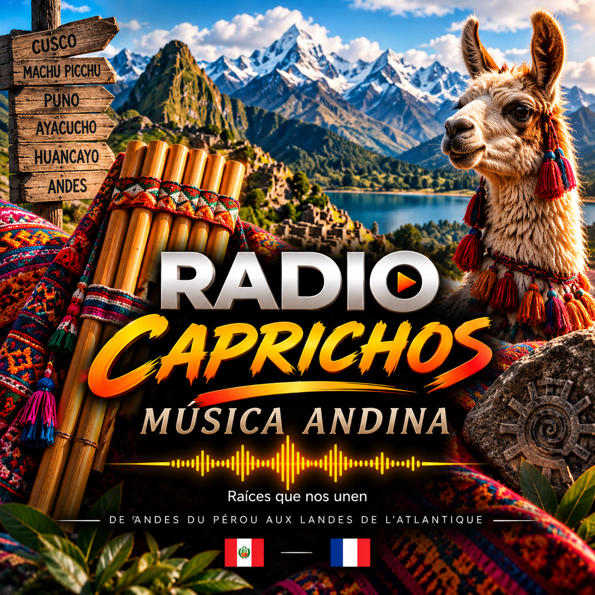
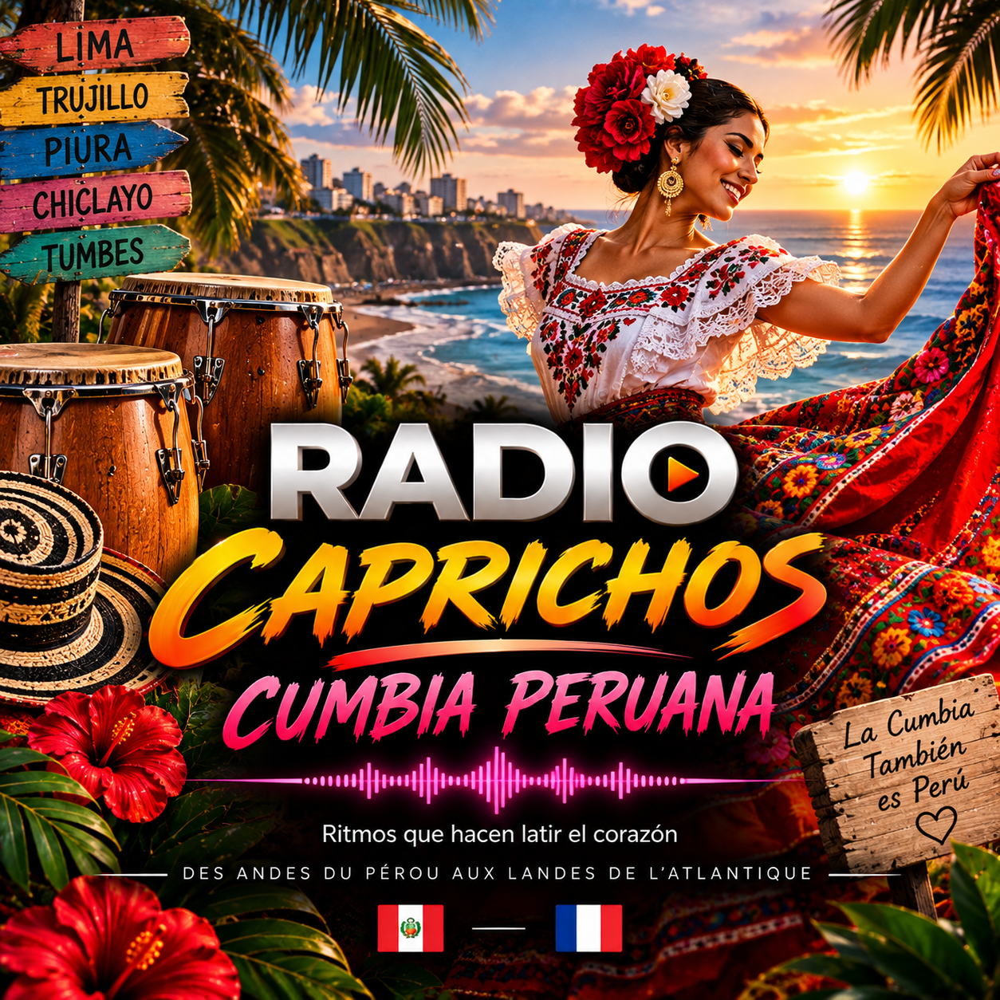
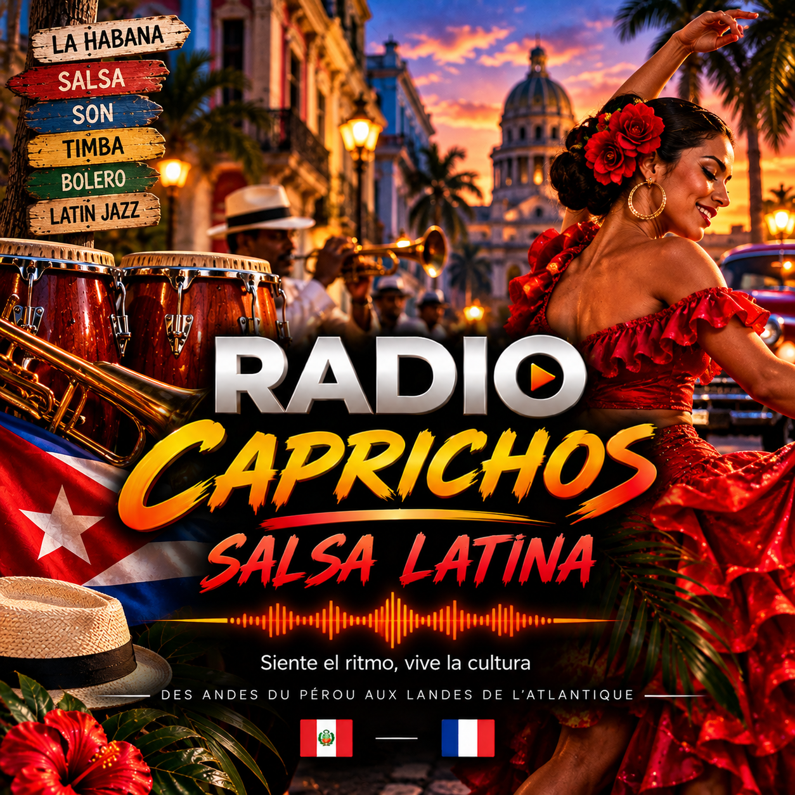
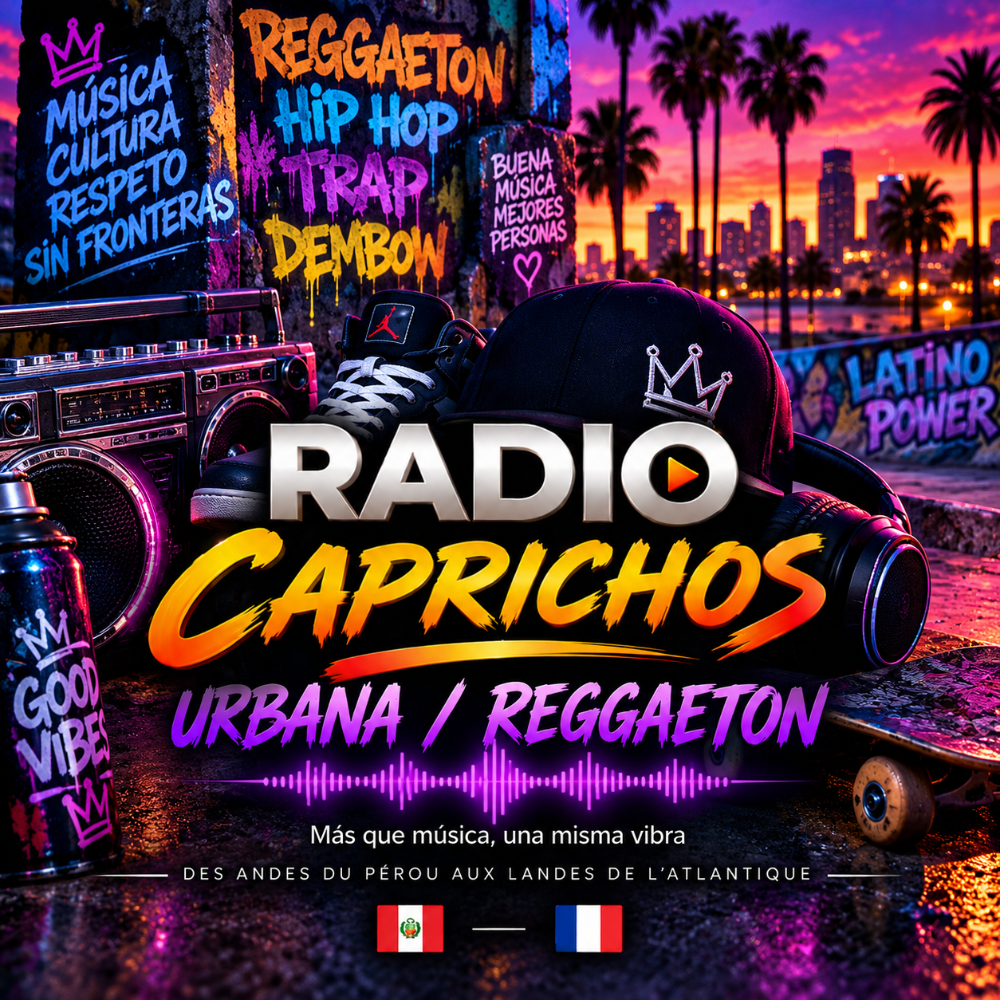

Radio Caprichos
La radio principal
● MODO TESTLa música que nos une
Una radio para cada momento
La radio principal
● MODO TEST
Raíces del Perú
Próximamente
Ritmo y alegría
Próximamente
Que viva la salsa
Próximamente
La vibra urbana
● EN DIRECTO · 24/7Para el corazón
PróximamenteDe Villa El Salvador aux Landes. Retrouvez les pionniers, les anciennes émissions et les souvenirs de Radio Caprichos.
Découvrir notre histoire →Une radio, une communauté, une famille. L'histoire continue entre le Pérou et les Landes.
Découvrir la communauté →